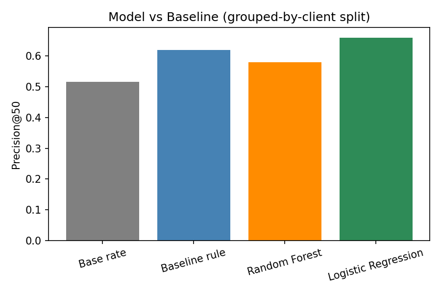

A content team lead has limited time each sprint and thousands of pages. Which ones should get reviewed first — for refresh, expansion, or monitoring? Getting this wrong costs two ways: reviewing pages that didn't need it wastes hours, while ignoring a genuinely declining, high-traffic page lets the loss compound. This study builds and honestly validates a ranking system to support that decision.
Primary dataset: FlyRank's anonymized starter release (content_refresh_anonymized.csv) — 30,000 rows, one row per pseudonymized content item, spanning 32 clients, with trailing-90-day search and engagement metrics. I additionally verified a mid-panel slice (March 2026, 9,841,378 rows) of the full internship warehouse release via DuckDB to confirm grain and data availability at scale.
Deliberately excluded: trend_direction and trend_pct (the label's direct source — including them would leak the answer); any FlyRank product decision flags such as health_score or priority_score (not shipped in this data, and would encode an existing rule rather than new signal); GA4-derived engagement features for rows without confirmed tracking (only ~4.2% of a sampled warehouse month had ga4_data_available = TRUE).
Label (proxy): is_declining_label = (trend_direction == "down") — a proxy computed from the current window, not a validated future outcome.
Baseline: a transparent rule — stale_visible_page: page is 180+ days since last update AND has 100+ impressions in the last 90 days, scored by impression volume.
Model: Logistic Regression and Random Forest, using 7 observable features (content age, days since update, impressions, average position, CTR, word count, search volume) — all knowable before any decision point.
Validation: Grouped split by client_id (8 held-out clients, 25% test size, seed=42) — not a random split, since pages from the same client sharing hidden patterns let a random split's model partially memorize clients rather than generalize.
Leakage audit: deliberately added trend_pct as a feature to test the harness — Precision@50 jumped from 0.580 to a perfect 1.000, confirming the setup correctly detects leakage. It is excluded from the real model.
| Method | Precision@50 | Split |
|---|---|---|
| Base rate | 0.517 | — |
| Baseline rule | 0.620 | Grouped by client |
| Random Forest | 0.580 | Grouped by client |
| Logistic Regression | 0.660 | Grouped by client |
| Random Forest (dishonest, for comparison) | 0.920 | Random (no grouping) |

Precision@50 under the honest, grouped-by-client validation split.
On the honest split, the simple baseline rule and Logistic Regression outperform Random Forest — the opposite of the ungrouped result. The 34-point gap between the random split (0.920) and grouped split (0.580) for the same Random Forest model is itself the key finding: it is fully explained by client-level memorization, not real predictive skill.
The output is a ranked review queue combining model confidence with interpretable reason codes, so a reviewer sees the concrete signal behind every flag — never a bare score.
| Reason code | Action | Trigger |
|---|---|---|
model_decline_risk | Review for refresh | Model probability ≥ 0.65 |
stale_visible_page | Review for refresh | 180+ days stale AND 100+ impressions |
ctr_review_candidate | Review metadata/CTR | 500+ impressions, position 1–20, CTR < 0.5% |
monitor_only | Monitor | No strong signal yet |
Monitoring / retrain triggers: re-validate if Precision@50 on fresh data drops meaningfully below 0.580; re-validate with a grouped split if the client mix changes substantially; reassess GA4-feature weighting if tracking coverage shifts.
All code, notebooks, and metrics receipts are in the public repo below. Random seed: 42 throughout. To rerun: clone the repo, install requirements.txt, and run the notebooks in work/notebooks/ in order (w01 → w07 → capstone).